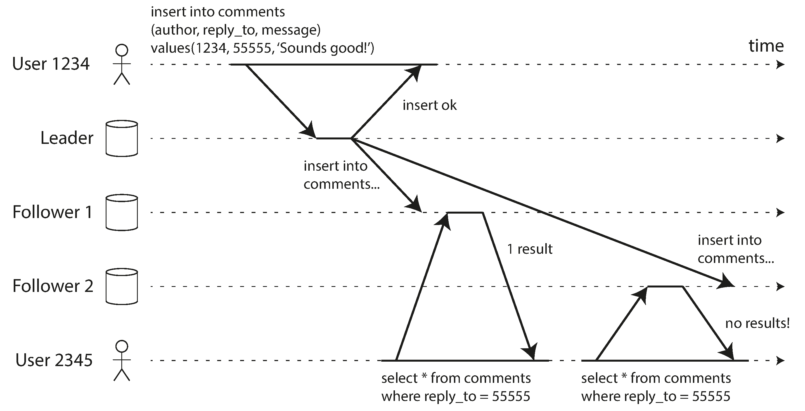
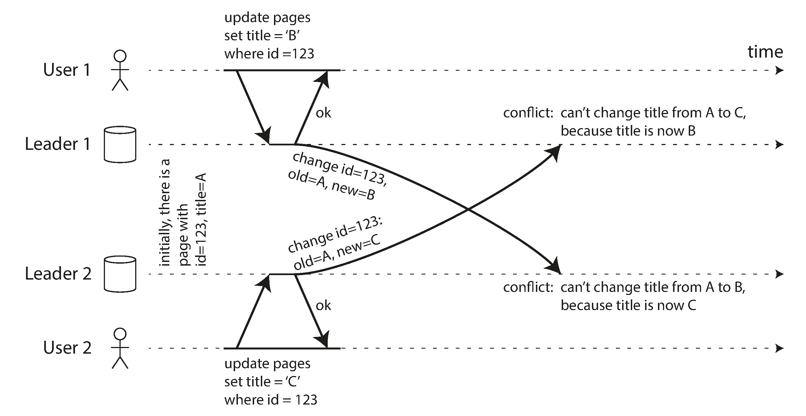
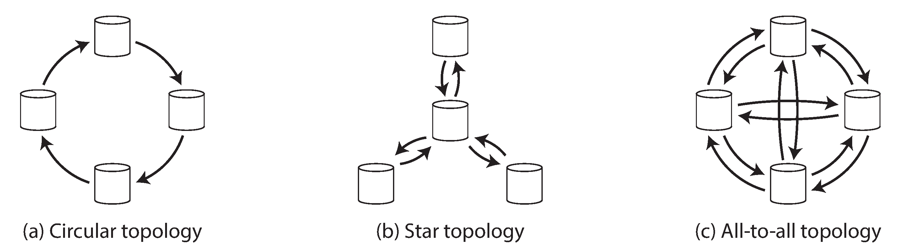
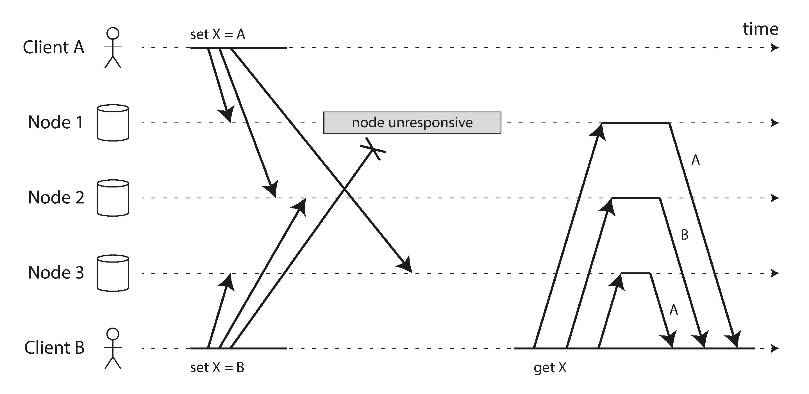
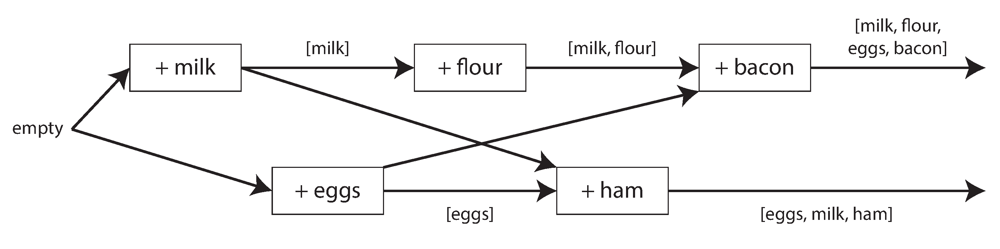

Designing Data-Intensive Applications
Chapter 5: Replication
Knowledge Transfer Session • Part II: Distributed Data

"The major difference between a thing that might go wrong and a thing that cannot possibly go wrong is that when a thing that cannot possibly go wrong goes wrong it usually turns out to be impossible to get at or repair."
— Douglas Adams, Mostly Harmless (1992)
In distributed data systems, everything that can go wrong eventually will go wrong: networks partition, disks fill up, clocks drift, leaders crash, and human operators make mistakes. Replication is our primary defense—and our biggest source of architectural complexity.
Why Replicate Data?
Replication means keeping a copy of the same data on multiple machines connected via a network.
- 🌍 High Availability — Allow the system to continue functioning seamlessly even if several underlying nodes or entire datacenters fail.
- ⚡ Reduced Latency — Keep data geographically close to end users across the globe to eliminate cross-continent speed-of-light delays.
- 📈 Read Scalability — Scale out the volume of read-only queries by distributing requests across dozens or hundreds of replica machines.

The Fundamental Problem: Handling Changes
🧊 Static Replicated Data
If your data never changes over time, replication is completely trivial:
- Copy the files to every node once
- All nodes remain identical forever
- Zero coordination or consensus required
🔥 Dynamic Changing Data
All of the difficulty in replication lies in handling changes:
- In what order should updates be processed?
- What happens if a node is offline during a write?
- How do we resolve concurrent conflicting updates?
💡 Chapter Assumption: We assume throughout Chapter 5 that the dataset is small enough that each machine holds a copy of the entire dataset. In Chapter 6, we relax this assumption and introduce partitioning (sharding) for datasets larger than a single machine.
Replication Through History
Replication is an old, deeply studied topic in computer science:
- Studied since the 1970s: The fundamental principles haven't changed since early papers (e.g. Bruce Lindsay et al., IBM Research, 1979) because the physical constraints of computer networks remain the same.
- The Single-Node Assumption: For decades outside of academic research, mainstream software engineering assumed a database was a single monolith machine.
- The Distributed Reality: Modern scale forced distributed databases into mainstream production, catching many developers off guard.
⚠️ The "Eventual Consistency" Myth
The term eventual consistency was coined by Douglas Terry et al. (1994) and popularized by Werner Vogels (2008). It became the marketing battle cry of NoSQL databases.
"However, not only NoSQL databases are eventually consistent: followers in an asynchronously replicated relational database have the exact same characteristics!"
Roadmap: Three Replication Archetypes
Almost all distributed databases choose one of three fundamental algorithms to replicate changes:
1. Single-Leader
Active/Passive (Master–Slave)
All writes funnel through one designated leader. Followers replicate its change stream. Reads go to any node.
PostgreSQL, MySQL, Oracle, MongoDB, Kafka
2. Multi-Leader
Active/Active (Master–Master)
Multiple nodes accept writes. Leaders replicate changes to one another. Essential for multi-datacenter and offline sync.
CouchDB, Tungsten, PostgreSQL BDR, GoldenGate
3. Leaderless
Dynamo-Style Quorums
Any replica accepts writes directly from clients. Quorums (w + r > n) guarantee overlap. Replicas self-heal.
Amazon Dynamo, Apache Cassandra, Riak, Voldemort
Leaders and Followers
Single-leader replication: the classic foundation of distributed databases
Leader-Based (Master–Slave) Architecture
How the most common replication algorithm works:
- Leader (Master / Primary) — One replica is designated the leader. When clients write to the database, they must send requests to the leader, which writes first to local disk storage.
- Followers (Read Replicas / Slaves / Secondaries) — The leader streams all data changes across the network as a replication log or change stream. Each follower applies writes in the exact same order.
- Read Queries — Clients can query either the leader or any follower. Followers are strictly read-only from the client's point of view.

Ubiquity & Standby Terminology
Leader-based replication is everywhere in modern infrastructure:
- Relational DBs: PostgreSQL (built-in streaming since 9.0), MySQL, Oracle Data Guard, SQL Server AlwaysOn Availability Groups.
- NoSQL DBs: MongoDB (replica sets), RethinkDB, LinkedIn Espresso.
- Message Brokers: Apache Kafka (partition leaders & ISR), RabbitMQ HA queues, DRBD block devices.
Standby Nomenclature: Hot vs Warm vs Cold
• Hot Standby: Processes the replication log AND actively serves client read queries (e.g. PostgreSQL hot standby).
• Warm Standby: Applies changes from the leader but serves NO client queries (waiting strictly for failover).
• Cold Standby: Inactive backup instance; requires manual restore before becoming operational.
*Note: In partitioned systems (Chapter 6), each partition has exactly one leader, but leaders are distributed across different nodes.

Synchronous vs. Asynchronous Replication
A critical configuration choice with profound behavioral consequences:
- Follower 1 is Synchronous: The leader forwards the write and blocks until Follower 1 confirms receipt before returning success to the user and making the write visible to other clients.
- Follower 2 is Asynchronous: The leader fires off the replication message over the network and returns immediately, without waiting for Follower 2's confirmation.
- Replication Lag: Normally, changes arrive in less than a second. But if a follower is recovering, overloaded, or network-congested, lag easily stretches to minutes.

The Synchronous Dilemma
🛡️ The Synchronous Advantage
Guaranteed Up-to-Date Consistency:
- Follower is guaranteed to have an exact, up-to-date copy consistent with the leader.
- If the leader suddenly dies, zero data is lost.
- Durability expectations are fully satisfied.
💀 The Synchronous Fatal Flaw
Single Node Crash Blocks All Writes:
- If the synchronous follower crashes, undergoes maintenance, or experiences a network hiccup, the leader cannot complete any writes!
- The entire database grinds to a complete halt until the synchronous replica responds.
The Practical Compromise: Semi-Synchronous
In real-world production databases, enabling "synchronous replication" almost always means semi-synchronous replication (e.g. MySQL, Facebook architecture):
How Semi-Synchronous Works
- Exactly one follower is configured to be synchronous.
- All other followers remain strictly asynchronous.
- If the synchronous follower crashes or becomes slow, the leader automatically promotes one of the asynchronous followers to become synchronous!
The Guarantee
Guarantees you always have an up-to-date copy of every committed transaction on at least two nodes: the leader and one synchronous follower.
Prevents the write pipeline from freezing while safeguarding data durability against single-node failures!
Fully Asynchronous: The Durability Trade-off
Often, leader-based replication is configured to be completely asynchronous:
✅ High Availability & Performance
- Leader continues processing writes at maximum speed without waiting for network ACKs.
- Writes proceed unhindered even if all followers are completely unreachable or lagging by hours.
- Essential when followers are geographically dispersed across continents.
⚠️ Weakened Durability Guarantee
- If the leader fails catastrophically and cannot recover, any writes not yet replicated to followers are permanently lost!
- The client received a "success" confirmation, yet the write was not durable.
- A very common trade-off in scalable internet architectures.
"Weakening durability may sound like a bad trade-off, but asynchronous replication is nevertheless widely used, especially if there are many followers or if they are geographically distributed."
Research Spotlight: Chain Replication & Consensus
Because losing committed data in asynchronous systems is serious, researchers developed novel replication algorithms providing both strong consistency and high availability:
⛓️ Chain Replication
Proposed by Robbert van Renesse & Fred Schneider (2004), extended by CRAQ (Object Storage on CRAQ, Terrace & Freedman, 2009).
- Nodes arranged in a linear pipeline (Head → Middle nodes → Tail).
- Writes enter at the Head, flow down the chain, committed at the Tail.
- Reads served by Tail (or clean reads from any node in CRAQ).
- Provides linearizability with high throughput. Implemented in Microsoft Azure Storage.
🗳️ Connection to Consensus
There is an intimate mathematical connection between replication consistency and distributed consensus (getting multiple nodes to agree on values despite faults).
We will explore consensus theory, Raft, Paxos, and Zab in depth in Chapter 9. For now, we examine the practical leader-follower mechanisms used in daily database administration.
Setting Up New Followers: The Problem
From time to time, you need to spin up new followers: to increase read capacity, rebalance load, or replace dead nodes. How do you guarantee the new follower gets an exact, consistent replica?
❌ Naive File Copy Fails
Clients are constantly writing to the leader. Disk pages are in constant flux. A raw file copy (`cp` or `rsync`) sees different parts of the database at different points in time.
The resulting database files on the follower will be corrupted and make no sense!
❌ Locking the Database Fails
You could make disk files temporarily consistent by acquiring a global write lock on the leader database during the copy.
However, locking the master halts all writes, completely defeating our core operational requirement of high availability!
Zero-Downtime Follower Setup: 4 Steps
Fortunately, modern database engines permit non-blocking follower provisioning:
1. Consistent Snapshot
Take a consistent snapshot of the leader's database without taking a global write lock (e.g., using multi-version concurrency control or tools like innobackupex for MySQL).
2. Copy Snapshot
Transfer the database snapshot across the network to the target new follower node.
3. Connect & Request Stream
The snapshot must be tagged with an exact log position:
- PostgreSQL: Log Sequence Number (LSN)
- MySQL: Binlog coordinates (filename + byte offset)
The follower connects to the leader and requests all changes that occurred since that snapshot position.
4. Catch Up & Live Sync
Once the follower processes the backlog of changes, it has caught up and begins consuming live data changes in real time.
Handling Node Outages: Follower Failure
Any node can go down unexpectedly (hardware failure, crash) or for planned maintenance (kernel security patches, OS upgrades). Being able to reboot individual nodes without downtime is crucial.
Follower Failure: Catch-up Recovery
On local disk, each follower maintains a persistent log of the changes it has received from the leader. If a follower crashes or experiences network disconnection:
- It reads its log to identify the last transaction processed before the interruption.
- It reconnects to the leader and requests all transactions that occurred during its disconnection.
- It applies the delta until caught up, then resumes listening to the change stream.
Operational Benefit
Follower recovery is simple and routine. Individual followers can be rebooted, patched, or replaced one by one in a rolling upgrade without affecting write traffic or cluster health.
Handling Node Outages: Leader Failover
Handling a failure of the leader is drastically more difficult: one follower must be promoted to leader, clients rerouted, and followers reconfigured. This is called failover.
1. Failure Detection
There is no foolproof way to distinguish a crash from network delay. Nodes bounce heartbeat messages. If a node fails to respond for a timeout period (e.g., 30s), it is declared dead.
2. Leader Election
A new leader is chosen via majority election (consensus) or appointed by a controller node. The best candidate is the replica with the most up-to-date data changes to minimize data loss.
3. Reconfiguration
Clients must be redirected to write to the new leader. If the former leader recovers, the system must force it to step down, realize it was deposed, and become a follower.
Failover Danger 1: Discarded Writes
In asynchronous replication, the promoted follower may not have received all writes from the old leader before it died.
- Meanwhile, the new leader starts accepting brand new client writes.
- When the former leader reconnects, what should happen to its unreplicated writes?
- The Standard Solution: The old leader's unreplicated writes are simply discarded!
- Durability Violation: The client was told the write was successful, but the data is erased!
Why Discarding Writes Is Dangerous
Discarding writes violates the core promise of persistence. If clients update banking records or order items and receive an OK response, finding those writes silently erased breaks business integrity.
This becomes catastrophically dangerous when outside storage systems are coordinated with the database.
Failover Danger 2: The GitHub Incident
A classic real-world disaster illustrating the ripple effect of discarded writes (GitHub Availability Incident, Sept 2012):
What Happened
- An out-of-date MySQL follower was promoted to leader following an outage.
- MySQL used an autoincrementing counter to assign primary keys to new rows.
- Because the new leader's counter lagged behind the old leader's, it began reusing primary keys that had previously been assigned!
- These primary keys were also stored in a separate Redis cache.
The Catastrophic Result
🚨 Inconsistency Between MySQL and Redis Caused Private User Data to Be Disclosed to the Wrong Users!
A user requested their private repository or profile, but because primary keys were recycled, Redis served another user's cached private data!
Failover Danger 3: Split Brain & STONITH
In network partitions, two nodes can both believe they are the legitimate leader:
- Split Brain: If both nodes accept writes independently without conflict resolution, data is rapidly corrupted or lost.
- Fencing / STONITH: "Shoot The Other Node In The Head" — nodes use hardware fencing (IPMI power off) to forcefully kill a rogue leader.
- The STONITH Failure Mode: If fencing logic is misconfigured or network flaps cause both nodes to suspect each other, both nodes shoot each other down, killing the entire cluster!

Failover Danger 4: The Timeout Dilemma
Timeout Too Long (e.g. 5 minutes)
System sits idle and unavailable for 5 minutes during a real crash before recovering. SLA is severely impacted.
Timeout Too Short (e.g. 2 seconds)
Temporary load spikes, GC pauses, or transient packet drops trigger unnecessary failovers.
If the system is already struggling with overload, failover overhead makes the crisis vastly worse!
"There are no easy solutions to these problems. For this reason, some operations teams prefer to perform failovers manually, even if the software supports automatic failover."
Implementation of Replication Logs
Under the hood: from raw statements and disk bytes to logical change streams
Method 1: Statement-Based Replication
In the simplest conceptual model, the leader logs every write request (statement) that it executes and sends that statement log to its followers:
How It Works
For a relational database, every SQL statement (`INSERT`, `UPDATE`, `DELETE`) is forwarded directly over the network to followers.
Each follower parses and executes that SQL statement as if it had been received directly from an application client.
Initial Appeal & Usage
- Extremely Compact: Only the concise SQL text is sent across the wire (e.g. `UPDATE users SET status = 'active' WHERE id = 42;`).
- History: Used in MySQL prior to version 5.1.
- Today: VoltDB requires statement-based replication, making it completely safe by strictly requiring all transactions to be deterministic.
Why Statement-Based Replication Breaks Down
Although simple, statement-based replication is notoriously brittle due to three critical failure modes:
1. Nondeterminism
Any statement calling nondeterministic functions like `NOW()`, `RAND()`, or `UUID()` produces different values on every replica, silently corrupting consistency.
2. Autoincrement & Order
Statements using autoincrementing columns or conditional updates (`UPDATE ... WHERE condition`) must execute in identical order on all replicas, severely restricting concurrency.
3. Side Effects
Triggers, stored procedures, and user-defined functions that read system state or invoke external services yield different side effects on each node.
💡 Workarounds: The leader can substitute fixed return values for `NOW()`, but edge cases are so plentiful that modern databases prefer row-based replication.
Method 2: Write-Ahead Log (WAL) Shipping
Recall from Chapter 3 that storage engines represent data on disk by appending writes to an append-only byte log:
- Log-Structured (SSTables & LSM-Trees): The log is the primary storage structure; segments are compacted in the background.
- B-Trees: Every block modification is first recorded in a write-ahead log (WAL) to restore page consistency after crashes.
- WAL Shipping: Besides writing to local disk, the leader sends this exact append-only byte log across the network.
- Follower: Processes this byte log to build an exact, identical disk image of the leader's data structures!
- Used by: PostgreSQL Oracle Data Guard

The Operational Trap of WAL Shipping
Low-Level Physical Coupling
A Write-Ahead Log contains details of which bytes were changed in which disk blocks.
This binds replication tightly to the storage engine's low-level binary disk representation!
💀 Major Version Upgrades Require Downtime
If a database changes its on-disk storage format from one major version to another, the leader and followers cannot run different software versions!
You cannot perform a zero-downtime rolling upgrade (upgrading followers first, then failing over). Major PostgreSQL upgrades with WAL shipping traditionally required maintenance downtime!
Method 3: Logical (Row-Based) Log Replication
Use different log formats for replication and for storage engine internals, decoupling replication from physical disk layouts:
Row-Level Granularity
A logical log describes table writes at the granularity of a row:
- INSERT: Contains the new values of all columns.
- DELETE: Contains the primary key (or old values of all columns if no primary key exists).
- UPDATE: Contains the primary key and the new values of all changed columns.
- Transactions: Multi-row modifications emit multiple row records followed by a commit marker.
Real-World Standard
MySQL binlog: When configured for row-based replication (RBR), MySQL logs row-level deltas rather than raw SQL text.
This represents the modern sweet spot between compatibility, safety, and performance for relational systems!
Superpowers of Logical Logs: Upgrades & CDC
🔄 Zero-Downtime Rolling Upgrades
Because the logical log is decoupled from storage engine byte layouts, it remains backward compatible across database software versions:
- Followers can run a newer software version than the leader.
- Upgrade followers one by one while cluster remains live.
- Perform a clean failover to an upgraded node, making it leader.
- Upgrade the old leader with zero downtime!
📡 Change Data Capture (CDC)
A logical log format is straightforward for external applications and stream processors to parse:
- Stream database changes to data warehouses (e.g. Snowflake, BigQuery) for offline OLAP analytics.
- Continuously build and refresh custom external search indexes (Elasticsearch, Solr).
- Invalidate and populate Redis/Memcached caches in real time. (Chapter 11 deep dive!)
Method 4: Trigger-Based Replication
When built-in database replication is not flexible enough, replication moves up into the application layer:
How Triggers Work
- Register database triggers and stored procedures that fire automatically when write transactions occur.
- The trigger logs data modifications into a separate audit/delta table.
- An external process (daemon) reads the delta table, executes custom application logic, and replicates changes to other databases.
- Examples: Bucardo (PostgreSQL) Databus (Oracle/LinkedIn) Oracle GoldenGate
Flexibility vs. High Overhead
- Why use it: Replicating only a subset of data, replicating between heterogeneous database engines, or applying custom business conflict logic.
- ⚠️ The Cost: Substantially higher CPU/storage overhead than built-in replication.
- ⚠️ The Danger: Prone to subtle application bugs, transaction aborts, and maintenance quirks.
Replication Log Implementations Comparison
| Method | Granularity | Storage Coupling | Zero-Downtime Upgrades | CDC & External Tooling |
|---|---|---|---|---|
| Statement-Based | SQL Statements (`INSERT`, `UPDATE`) | Decoupled | Yes (with caution) | Hard (requires SQL parsing) |
| WAL Shipping | Physical bytes in disk blocks | Tightly Coupled | ❌ No (requires exact match) | ❌ Extremely difficult (binary format) |
| Logical (Row) | Row-level changes (`BEFORE`/`AFTER`) | Decoupled | ✅ Yes (smooth rolling) | ✅ Excellent (industry standard) |
| Trigger-Based | Application-defined rows | Decoupled (App layer) | Yes (custom code) | Flexible, but high overhead |
Logical (row-based) replication has become the gold standard for modern scalable databases.
Problems with Replication Lag
Concurrency, asynchrony, and the dangerous illusions of "eventual consistency"
The Read-Scaling Architecture & Inevitability of Lag
Why horizontal read scaling fundamentally forces distributed systems into asynchronous trade-offs.
📈 The Read-Scaling Promise
Most web workloads are heavily read-dominated (e.g., 99% reads, 1% writes). Leader-based replication allows read queries to be distributed across dozens of followers, freeing the leader to process writes and placing read replicas close to global users.
Read-scaling only works with asynchronous replication. If you made 20 followers synchronous, a single slow disk, garbage collection pause, or network hiccup would freeze all writes globally. Availability collapses exponentially (pN).
⏳ The Inevitable Consequence: Lag
- Outdated Data: Reading from an asynchronous follower may return stale data that does not reflect recent writes.
- Temporary Inconsistency: Running the exact same query on leader and follower simultaneously can return contradicting results.
- Eventual Convergence: If writes stop completely, followers will eventually process all log entries and match the leader.
- Hence: Known as eventual consistency (Douglas Terry et al., Werner Vogels).
The Elusive Meaning of "Eventual"
Why the absence of replication lag bounds transforms theoretical consistency into severe operational bugs.
Normal Operation
Lag < 1000 ms
Under normal loads and healthy networks, replication lag is typically a fraction of a second. The delay is practically imperceptible to human users browsing web interfaces.
Degraded Operation
Lag: Minutes to Hours
When nodes operate near capacity, disk queues back up, cross-datacenter WAN links become congested, or long compaction/GC runs occur, lag easily balloons to minutes or hours.
The Spec Trap
Zero Guarantees
"Eventually" is deliberately vague: distributed replication protocols provide no theoretical upper bound on when a replica must catch up. Stale reads can persist indefinitely.
Three Critical Replication Lag Anomalies:
When lag is non-trivial, three distinct user-facing consistency bugs emerge: (1) Reading Your Own Writes (data vanishes post-submit), (2) Monotonic Reads (time jumps backward upon reload), and (3) Consistent Prefix Reads (causality violated: answers appear before questions).
Reading Your Own Writes
A user submits a profile change or comment, which successfully commits on the leader.
The user immediately reloads the webpage. Their read query is routed to a stale follower that has not yet processed the replication stream. The data they just entered is completely missing!
- To the user, it looks like their submit failed or data was lost permanently.
- They resubmit repeatedly, generating duplicate records and wasting server resources.
- This occurs constantly in asynchronous architectures where reads and writes use distinct replica targets.

Figure 5-3: User makes a write to the leader, then reads from a lagging follower. To the user, data appears lost.
Read-After-Write Consistency
Also known as read-your-writes consistency: reassuring users that their actions were saved.
🔒 The Formal Guarantee
If a user submits an update and then reloads or accesses that data, they are guaranteed to see their own submitted updates.
Read-after-write makes no promises about other users' writes! Updates submitted by other users may remain invisible until followers catch up. It solely reassures the active user that their own input was committed.
🎯 Where Is This Vital?
- User Profiles: Editing bio, email, or password — must immediately reflect on profile reload.
- E-Commerce Carts: Adding an item to the shopping cart; viewing the cart must display the newly added item.
- Social Media Posts & Comments: Posting a status or comment; refreshing the feed must show the submitted post.
- Financial Transactions: Submitting a payment or funds transfer; balance or pending list must update immediately.
Implementing Read-After-Write Consistency
Four proven engineering techniques in leader-based replication architectures.
Read Modifiable Data from Leader
If reading data that only the current user could have modified, always read from the leader. (E.g., user's own profile page is read from leader; other users' public profiles are read from followers).
Time-Decay Leader Read Threshold
Track the timestamp of the user's last write. For one minute after a write, route all user reads to the leader. After 1 minute, revert reads to followers.
Client Write Timestamps / LSN
Client remembers the timestamp or Log Sequence Number (LSN) of its latest write. Follower serving the read must be caught up at least to that LSN.
Cross-Datacenter Leader Routing
When replicas are distributed across multiple datacenters for global proximity, any read that must hit the leader requires routing requests across WAN to the leader's home datacenter.
The Cross-Device Consistency Challenge
What happens when the same user accesses your service across a smartphone and desktop?
📱 The Scenario
A user enters an address or credit card on their desktop browser, then immediately checks the mobile app on their phone 5 seconds later. Cross-device read-after-write consistency requires that their phone sees the desktop's update instantly.
❌ Why Client Timestamps Fail
Approaches that rely on the client remembering its last write timestamp fail because the phone's code has no shared memory with the desktop browser.
🌐 Network & Datacenter Asymmetry
Devices often connect through completely different networks:
- Desktop: Home broadband / fiber connection routed to Datacenter A.
- Mobile Phone: Cellular carrier 5G/LTE network routed to Datacenter B.
Replicas in Datacenter B may lag significantly behind Datacenter A.
Monotonic Reads: Time Moving Backward
What happens when an observer reads from two different replicas with different replication lags?
1. User 1234 posts a comment.
2. User 2345 visits the thread; routed to Follower 1 (low lag) → sees the comment!
3. User 2345 refreshes the browser; round-robin routes them to Follower 2 (high lag) → the comment has vanished!
To the user, it feels like the system traveled backward in time. It is disorienting and breaks application trust.

Figure 5-4: User first reads from a fresh replica, then from a stale replica. Time appears to go backward.
The Monotonic Reads Guarantee
Ensuring that subsequent reads by a user never observe an earlier system state.
📊 Formal Definition
Monotonic reads guarantees that if a user makes several reads in sequence, they will never see time go backward.
They may read an older value initially, but having once observed a state, they will never subsequently observe an older state.
Strong Consistency (Linearizability) > Monotonic Reads > Eventual Consistency
⚙️ Primary Implementation: Sticky Routing
The standard approach is to ensure that each user always issues their queries to the same replica:
Different users read from different followers (preserving horizontal scale), but an individual user moves strictly forward in time.
Consistent Prefix Reads & Causality
Violations of causal order when reads observe writes out of sequence.
🔮 Mrs. Cake appears to answer the question before Mr. Poons has even asked it!
There was a direct causal dependency between question and answer, but replication lag inverted their order to third-party observers.

Figure 5-5: If some partitions replicate slower than others, an observer may see the answer before the question.
Causality in Partitioned Databases & Solutions
Why consistent prefix reads is especially challenging in sharded and distributed architectures.
🧩 The Partitioning Problem
In a single-leader database with a global log, writes are applied in a single total order, so reads naturally see a consistent prefix.
However, in partitioned (sharded) databases (detailed in Chapter 6), different partitions operate independently:
- Partition 1 (holding Mr. Poons's question) might experience 5 seconds of network lag.
- Partition 2 (holding Mrs. Cake's answer) replicates instantaneously with 10 ms lag.
- There is no global write ordering across independent partitions.
🛠️ Engineering Solutions
Ensure any writes that are causally related are routed to the same partition (e.g. key by chat channel ID or thread ID instead of user ID).
Use algorithms that explicitly track causal dependencies with vector timestamps and version graphs, forcing followers to hold off exposing dependent writes until parents arrive.
Solutions for Replication Lag: Why Transactions Exist
Application-level duct tape vs. principled database-level consistency guarantees.
Handling read-after-write, monotonic reads, and consistent prefix reads entirely in application code is extraordinarily complex and error-prone. When replication lag spikes from 100ms to 45 minutes during an incident, brittle application logic collapses.
"Pretending that replication is synchronous when in fact it is asynchronous is a recipe for problems down the line." — Martin Kleppmann, DDIA Chapter 5
🏛️ Why Transactions Were Invented
Developers shouldn't have to write hundreds of lines of fragile routing logic. Transactions exist so that the database provides rigorous safety guarantees, allowing application code to remain simple and correct.
⏱️ Replication Lag Anomaly Lab
Ready
lag: 1s
lag: 5s
Multi-Leader Replication
Active-active architectures, write scalability, and the hazardous realities of concurrent conflicts
Why Multi-Leader? Breaking the Single-Write Bottleneck
Overcoming the single point of failure in traditional leader-follower replication.
🛑 The Single-Leader Achilles' Heel
In single-leader systems, exactly one node accepts writes. If a client cannot reach the leader due to a network partition, datacenter outage, or node crash, all writes across the entire application grind to a halt.
🌐 The Multi-Leader Alternative
Also known as master-master or active/active replication. Multiple nodes concurrently accept client writes!
- Every node processing writes forwards data changes to all other leaders.
- Each leader acts simultaneously as a follower to all other leaders.
- Operational Rule: It rarely makes sense within a single datacenter (complexity outweighs benefit), but is transformative in 3 specific use cases.
Multi-Datacenter Operation
Distributing databases across geographical continents for redundancy and low latency.
Two-Tier Hierarchy:
- Within Each Datacenter: Normal single-leader replication. Clients read and write to the local datacenter leader.
- Between Datacenters: Leaders replicate their changes to leaders in other datacenters asynchronously.
If an entire datacenter in Europe goes offline, the US datacenter continues processing local writes without interruption.

Figure 5-6: Multi-leader replication across multiple datacenters with conflict resolution.
Single-Leader vs. Multi-Leader in Multi-DC
Architectural trade-off matrix across latency, outages, and network unreliability.
| Dimension | Single-Leader Configuration | Multi-Leader Configuration |
|---|---|---|
| Performance & Latency | Every write must cross the internet to the leader's DC. High latency (100–300ms) perceived by remote users. | Writes processed locally in nearby DC at LAN speed (<5ms). Inter-DC network delay is completely hidden. |
| Tolerance of DC Outages | If leader's DC fails, complex failover must promote a follower in another DC to leader. Outage during transition. | Each DC operates fully independently. Surviving DCs continue writes. Failed DC catches up upon recovery. |
| Tolerance of Network Links | Highly vulnerable: writes synchronously traverse inter-DC links; internet hiccups stall writes globally. | Highly resilient: inter-DC replication is asynchronous; temporary link partitions do not block local writes. |
Multi-Leader Pitfalls: "Dangerous Territory"
Why Martin Kleppmann cautions that multi-leader replication should often be avoided.
In most relational databases, multi-leader replication is an afterthought retrofitted via external tools or plugins. It produces surprising and catastrophic edge cases with core database features.
"As multi-leader replication is a somewhat retrofitted feature in many databases... multi-leader replication is often considered dangerous territory that should be avoided if possible." — DDIA Chapter 5, p. 170
💥 Subtle Feature Interactions
- Autoincrementing Keys: If two leaders independently assign sequential IDs, they generate colliding primary keys unless configured with distinct offsets/steps.
- Triggers & Stored Procedures: Side-effects may fire multiple times or execute against unexpected intermediate states.
- Integrity Constraints: Concurrently inserting rows with identical unique keys (e.g. email) succeeds on both leaders, producing fatal replication collisions later.
- Schema Migrations (DDL): Running non-blocking DDL across asynchronous multi-leader nodes frequently corrupts data streams.
Clients with Offline Operation
Every disconnected device is architecturally a tiny single-node datacenter.
📱 The Mobile Calendar Analogy:
You need to view meetings (reads) and add appointments (writes) on your phone, laptop, or tablet while in airplane mode with no internet.
- Each device has a local database that acts as a leader (accepting writes).
- When online, an asynchronous multi-leader sync replicates changes across devices.
- Replication lag can be hours, days, or weeks!

Smartphones and laptops act as local leader replicas syncing asynchronously across unreliable links.
Real-Time Collaborative Editing
Treating collaborative web applications as distributed database replicas.
Locking (Single-Leader)
Lock entire document for User 1. User 2 must wait until User 1 commits and releases. Clunky, sluggish collaboration.
Granular (Multi-Leader)
Unit of change is a single keystroke! Changes apply locally to browser replica instantly, replicated async.
Powers tools like Google Docs and Etherpad. Eliminates locks, but requires specialized automated conflict resolution algorithms (Operational Transformation).

Engineers concurrently editing shared documents require real-time conflict-free convergence.
Handling Write Conflicts
The biggest and most complex problem in multi-leader replication
The Write Conflict Problem
What happens when two users concurrently modify the exact same record on different leaders?
Both writes succeeded locally. But when replicated, Leader 1 sees C arriving after B, while Leader 2 sees B arriving after C! Without conflict resolution, replicas permanently diverge!
In single-leader databases, the second write blocks or aborts. In multi-leader, both writes have already committed locally before the conflict is noticed.

Figure 5-7: A write conflict caused by two leaders concurrently updating the same record.
Synchronous vs. Asynchronous Conflict Detection
Why synchronous conflict detection completely defeats the purpose of multi-leader replication.
🤔 Could We Detect Conflicts Synchronously?
In theory, a leader could pause the client and wait for the write to replicate to all other leaders before acknowledging success to the user.
If you are willing to block on all replicas, you might as well just use a single-leader database.
⚡ Asynchronous Conflict Reality
Because writes must be fast and autonomous, multi-leader replication detects conflicts asynchronously.
- Both writes are acknowledged to clients as successful.
- The conflict is discovered seconds, minutes, or hours later during replication.
- At that point, it is far too late to prompt the user or rollback cleanly!
- The database must resolve the conflict automatically.
Conflict Avoidance: The Pragmatic Standard
The simplest and most frequently recommended strategy for dealing with multi-leader conflicts.
🛡️ The Principle of Avoidance
If the application can ensure that all writes for a particular record go through the same leader, conflicts can never occur!
⚠️ When Conflict Avoidance Breaks Down
In practice, designated leaders must occasionally be changed:
- Datacenter Outage: Home DC fails; traffic is rerouted to a secondary DC.
- User Mobility: A user travels to another continent, connecting to a closer DC.
Converging Toward a Consistent State
All replicas must arrive at the same final value when all changes have replicated.
Last Write Wins (LWW)
Attach a timestamp or UUID to each write; pick highest timestamp as winner, discard others.
Replica Priority Precedence
Assign each replica a unique integer ID. Writes originating at higher-numbered replicas override lower ones.
Value Merging
Merge conflicting values together (e.g. order alphabetically and concatenate strings into "B/C").
Explicit Conflict Recording
Store conflict metadata explicitly in a data structure that preserves all competing writes (siblings).
Custom Conflict Resolution: On-Write vs. On-Read
Executing application code to determine how conflicting records are reconciled.
✍️ Executing On Write
As soon as the database detects a conflict in the replication log stream, it immediately invokes a registered handler.
- Example: Bucardo for PostgreSQL allows writing a snippet of Perl to reconcile conflicting changes.
- Constraint: Runs in a background process; cannot prompt a human user; must execute extremely quickly.
📖 Executing On Read
When a conflict occurs, all competing versions are stored without modification (as "conflicts" or "siblings").
- Example: CouchDB stores conflicting document versions. Next time the doc is read, all versions are returned to the client.
- Flexibility: Application code can prompt the user (e.g. Git merge UI) or apply domain logic, then write the resolved record back.
Automatic Conflict Resolution & Research Frontiers
The pitfalls of custom code and the mathematical breakthroughs eliminating manual conflict handlers.
Amazon's early custom conflict handler preserved added items across conflicts, but failed to track item deletions properly. Customers would delete an item, but upon concurrent cart sync, the deleted item would mysteriously reappear!
CRDTs
Conflict-Free Replicated Data Types
Mathematical data structures (sets, maps, counters) that can be concurrently modified by multiple replicas and converge automatically without coordination (e.g., Riak 2.0).
Mergeable Data Structures
Persistent Git-Like Histories
Explicitly track change history DAGs (like Git commits) and use three-way merge algorithms with common ancestors to cleanly combine concurrent branch histories.
Operational Transform (OT)
Sequence Re-indexing
The algorithmic engine powering Google Docs and Etherpad. Specifically designed for concurrent edits to ordered sequences of characters in rich-text documents.
What Is a Conflict? Obvious vs. Subtle Semantics
Why real-world distributed conflicts extend far beyond simple record overwrites.
📝 Obvious Conflicts (Direct Overwrite)
Two concurrent writes update the same column of the same primary key row to conflicting values (e.g., user bio = "Hello" vs. "Hi").
Simple to detect: the replication engine observes conflicting timestamps or version numbers for the exact same key.
🏢 Subtle Semantic Conflicts: The Meeting Room Trap
Imagine a room booking app: Room 101 can only be booked by one team at 2:00 PM.
- User A queries Leader 1: Room 101 is free at 2 PM → creates booking row #101A.
- User B queries Leader 2: Room 101 is free at 2 PM → creates booking row #101B.
Multi-Leader Topologies
Routing write streams across clusters: circular, star, and all-to-all networks
Replication Topologies
A replication topology describes the communication paths along which writes propagate between leaders.
- [a] Circular Topology: Each node forwards writes in a ring. Each node receives writes from one peer and forwards them to one other (default in MySQL).
- [b] Star Topology: A central designated root node receives and forwards writes to all other leaders (can generalize to tree).
- [c] All-to-All Topology: Every leader transmits its writes directly to every other leader. The most densely connected architecture.

Figure 5-8: Three example topologies in which multi-leader replication can be set up.
Loop Prevention & Fault Tolerance in Topologies
Managing infinite replication cycles and single-point-of-failure vulnerabilities.
🔄 The Loop Prevention Mechanism
In circular and star topologies, a write passes through multiple intermediate nodes before reaching all replicas. Without safeguards, writes would circulate forever!
Each node is given a unique identifier. In the replication log, each write is tagged with the identifiers of all nodes it has traversed. When a node sees its own ID on an incoming write, it drops the write to prevent infinite loops.
💥 Fault Tolerance Comparison
If just one node crashes, it breaks the replication chain! Other nodes are blocked from communicating until the failed node is recovered or manually reconfigured.
Messages travel along redundant point-to-point links. A single node crash does not prevent the surviving nodes from replicating with each other.
Causality Violations in All-to-All Topologies
Network links operate at different speeds: writes can "overtake" each other in transit!
1. Client A inserts a row on Leader 1.
2. Client B reads that row and updates it on Leader 3.
3. Leader 2 receives the update before the insert!
4. Leader 2 tries to update a row that doesn't exist yet!
Clocks cannot be trusted to resolve this ordering (Chapter 8). We need version vectors.

Figure 5-9: With multi-leader replication, writes may arrive in the wrong order at some replicas.
Leaderless Replication
The Dynamo paradigm, quorum consensus, and sloppy availability
The Dynamo Philosophy & Historical Roots
Abandoning the leader entirely: allowing any replica to accept client writes directly.
📜 Historical Roots & Revival
Leaderless replication is not new: the earliest distributed database research in the 1970s (Gifford 1979, Thomas 1979) was leaderless. It was largely forgotten during the 25-year dominance of relational databases.
Amazon revived the architecture with its landmark 2007 Dynamo paper, spawning open-source datastores known as Dynamo-style:
⚙️ Architectural Mechanisms
- Direct Client Writes: Client sends writes to multiple replicas in parallel.
- Coordinator Routing: Alternatively, a coordinator node sends writes on behalf of the client, but does not enforce write ordering.
- Crucial Distinction: Amazon's internal Dynamo KV store is distinct from DynamoDB (AWS hosted service based on single-leader Paxos).
Writing When a Node Is Down
In leaderless replication, failover does not exist!
Outage Walkthrough (3 Replicas):
- Replica 3 is down (rebooting for OS patch).
- User 1234 sends a write to all 3 replicas in parallel.
- Replicas 1 and 2 accept the write; Replica 3 misses it.
- 2 of 3 acknowledge: write is considered successful! The client simply ignores Replica 3's absence.
When Replica 3 comes back online, clients reading from it risk receiving stale data. Hence, reads must also query multiple nodes in parallel!

Figure 5-10: Quorum write, quorum read, and read repair after a node outage.
Catching Up: Read Repair vs. Anti-Entropy
How a recovering node catches up on writes it missed while offline.
🛠️ Mechanism 1: Read Repair
When a client reads in parallel from multiple nodes, it compares versions:
- Client receives Version 7 from Node 1 & Node 2, and Version 6 from Node 3.
- Client recognizes Node 3 is stale, and writes Version 7 back to Node 3.
- Limitation: Works wonderfully for frequently read keys, but rarely read data never gets repaired!
🔄 Mechanism 2: Anti-Entropy Process
A background daemon continuously compares dataset hashes (Merkle trees) between replicas and copies missing data.
- Unlike replication logs, does not copy in any specific order.
- Can have significant background delay.
- ⚠️ Voldemort Risk: Project Voldemort has NO anti-entropy process! Infrequently read data remains stale forever, permanently degrading durability.
Quorums for Reading and Writing
The mathematical foundation of leaderless consistency: the pigeonhole principle in action.
📐 The Overlap Principle
If w + r > n, the set of nodes written to and the set of nodes read from must overlap by at least one node! That overlapping node is guaranteed to hold the latest version.
⚙️ Fault Tolerance Parameters
- n: Number of replicas storing a key (cluster may have 100 nodes, but key lives on n).
- w: Number of successful write acknowledgments required.
- r: Number of nodes queried for each read.
- Writes tolerate up to n − w unavailable nodes.
- Reads tolerate up to n − r unavailable nodes.
- Standard majority: n=3, w=2, r=2 (tolerates 1 down node) or n=5, w=3, r=3 (tolerates 2 down nodes).
Visualizing Quorum Overlap
Why the intersection of read and write sets guarantees freshness.
Example: n=5, w=3, r=3
- Write confirmed on 3 nodes (e.g. Nodes 1, 2, 3).
- Read queries 3 nodes (e.g. Nodes 3, 4, 5).
- Node 3 is in both sets: its version number proves it has the latest write!
• Read-heavy: w = n, r = 1 (fast reads, but any node crash stops writes).
• Write-heavy: w = 1, r = n (fast writes, but any node crash stops reads).

Figure 5-11: If w + r > n, at least one of the r replicas you read from must have seen the most recent write.
🔬 Quorum Explorer — w + r > n
n=3, w=2, r=2 (majority)
n=3, w=3, r=1 (fast reads)
n=3, w=1, r=3 (fast writes)
n=5, w=3, r=3 (higher tolerance)
Six Limitations of Quorum Consistency
Why even strict w + r > n configurations frequently return stale values in production.
1. Sloppy Quorums
Writes accepted on non-home nodes; read quorum queries home nodes → no overlap guaranteed!
2. Concurrent Writes
Writes have no defined order. If resolved via LWW timestamps, clock skew silently discards valid data.
3. Concurrent Read & Write
A read occurring concurrently with a write may land on only some updated nodes; result is undetermined.
4. Partial Write Failures
Write succeeds on fewer than w nodes and reports failure. It is never rolled back! Reads may still see it.
5. Node Restore from Old Data
Restoring a node from backup drops the count of nodes holding the new value below w, breaking quorum.
6. Linearizability Glitches
Timing race conditions allow Reader A to see new value, followed by Reader B seeing old value (Chapter 9).
Monitoring Replica Staleness
Why measuring replication lag is vastly harder in leaderless datastores.
📏 Leader-Based: Simple & Deterministic
Because writes are sequentially ordered in a log:
Gives an exact, quantifiable lag in bytes and milliseconds for operational monitoring alerts.
❓ Leaderless: Indeterminate & Complex
There is no fixed write order and no global log position!
- Without anti-entropy, infrequently read keys can remain stale for months or years.
- Research by Peter Bailis et al. introduced PBS (Probabilistically Bounded Staleness) to predict stale read likelihood.
- Standard monitoring tools rarely quantify "eventual consistency" in leaderless clusters.
Sloppy Quorums & Hinted Handoff
What should a cluster do during network partitions when the designated n nodes are unreachable?
Strict Quorum
Reject the write with an error because w home nodes cannot be reached. Consistent, but unavailable.
Sloppy Quorum 🛋️
Accept writes on reachable neighbor nodes outside the home n set! Maximize write availability.

A temporary resting place for writes when the home nodes are locked out.
Sloppy Quorums: Durability vs. Consistency
Why a sloppy quorum is not a true quorum in the traditional distributed sense.
⚠️ The Consistency Illusion
A sloppy quorum provides assurance of durability only (the data is safely saved on disk on w nodes somewhere).
🏢 Implementation Defaults in the Wild
- Riak: Sloppy quorums enabled by default. Prioritizes maximum write availability at all costs.
- Cassandra: Sloppy quorums disabled by default. Reads and writes strictly require the designated home replicas.
- Voldemort: Sloppy quorums disabled by default.
Multi-Datacenter Operation in Leaderless Systems
Architecting Dynamo-style leaderless replication across geographical regions.
🏛️ Cassandra & Voldemort Model
Replicas n span across all datacenters (e.g., n=6: 3 in US, 3 in EU).
- Client sends write to all replicas across the globe.
- Client only waits for
LOCAL_QUORUM(majority of nodes in local DC) to confirm success! - Cross-DC replication proceeds asynchronously over WAN without delaying local user response.
🌐 Riak Cluster-to-Cluster Model
Replicas n are strictly confined to a single datacenter.
- All quorum reads and writes remain 100% local to that datacenter's LAN.
- Inter-datacenter replication between independent clusters occurs asynchronously in the background.
- Behaves identically to multi-leader replication across datacenters.
Detecting Concurrent Writes
The "Happens-Before" relationship, causal dependency DAGs, tombstones, and version vectors
The Concurrent Writes Problem
In leaderless datastores, clients write to the same key simultaneously without coordination.
The Anomaly (Figure 5-12):
- Node 1: Receives only Write A (network drop blocks Write B). Value = A.
- Node 2: Receives Write A first, then Write B. Value = B.
- Node 3: Receives Write B first, then Write A. Value = A.

Figure 5-12: Concurrent writes in a Dynamo-style datastore: there is no well-defined ordering.
Last Write Wins (LWW): Seductive, Popular, Dangerous
Achieving eventual convergence at the direct expense of data durability.
⚙️ The LWW Premise
Attach a timestamp (or UUID) to every write. The write with the highest timestamp wins; older writes are discarded.
- Forces an arbitrary total order on concurrent writes.
- Guarantees all replicas eventually converge to the same value.
- The only supported conflict resolution method in Apache Cassandra; optional in Riak.
🚨 The Hidden Data Loss Catastrophe
LWW achieves convergence by silently destroying data!
- Writes reported as successfully committed to clients (w acks) are discarded without warning.
- Due to clock skew (Chapter 8), a causally later write can have an earlier timestamp and be dropped!
The "Happens-Before" Relationship
Defining concurrency rigorously: it is about causal dependency, not physical wall-clock time!
🧩 The 3 Possibilities for Operations A & B
Operation B knows about A, depends on A, or builds upon A. B supersedes A and safely overwrites it.
Operation A knows about B and builds upon it. A supersedes B and safely overwrites it.
Neither operation knows about the other! There is a true conflict that must be merged or resolved.
💡 The Definition of Concurrency
"We simply call two operations concurrent if they are both unaware of each other, regardless of the physical time at which they occurred." — Martin Kleppmann, DDIA Chapter 5
Two writes may occur hours apart on different continents: if network partitions prevented them from exchanging data, they remain concurrent!
Concurrency, Time, and Relativity
The profound connection between distributed systems causality and Einstein's special relativity.
🌌 Einstein's Light Cones in Distributed Systems:
- In physics, information cannot travel faster than the speed of light (c). Events outside each other's light cones cannot causally affect one another.
- In computer networks, packets travel slower than light. Two operations cannot influence each other if messages have not arrived in time.
- Physical Time is Irrelevant: Clock drift makes absolute simultaneity impossible. Causal awareness is the only true ordering.
Information propagation delay defines concurrency in physics and distributed networks alike.
Capturing Happens-Before: Shopping Cart Walkthrough
How version numbers track causal chains across concurrent clients (DDIA Figure 5-13).
[milk] → Server assigns v1.[eggs] (unaware of v1) → Server assigns v2; stores both as concurrent siblings![flour] with v1 → Overwrites v1 [milk] → stores [milk, flour] (v3) + concurrent [eggs] (v2).[milk]+[eggs], adds [ham] with v2 → Overwrites v2 → stores [milk, flour] (v3) + [eggs, milk, ham] (v4).[milk, flour]+[eggs], adds [bacon] with v3 → stores [eggs, milk, ham] (v4) + [milk, flour, eggs, bacon] (v5).
Figure 5-13: Capturing causal dependencies between two clients concurrently editing a shopping cart.
The Causal Dependency DAG
Visualizing the directed acyclic graph of version ancestry (Figure 5-14).
Key Properties of the DAG:
- Arrows indicate happened-before dependencies (later operations knew of earlier ones).
- When an operation builds on an earlier version, it safely overwrites its ancestors.
- Parallel branches represent active concurrent siblings.
- Zero Data Loss: Even though clients are never fully synchronized, no writes are silently lost!

Figure 5-14: Graph of causal dependencies in the shopping cart example.
The Server Algorithm for Happens-Before
How the database engine determines concurrency without understanding application data types.
🔢 The Four Invariants:
- 1. Version Increment: Server maintains a monotonic version number per key, incrementing on each write.
- 2. Read Returns All Siblings: When a client reads a key, the server returns all un-overwritten values and the latest version number.
- 3. Read-Before-Write: Client must read before writing, and include the version number from the prior read in its write request.
- 4. Overwrite Rule: When server receives a write with version v, it overwrites all values with version ≤ v, but retains all values with version > v as siblings!
🛡️ Unversioned Writes
If a client submits a write without including a version number, it is treated as concurrent with all existing writes.
Merging Siblings & The Tombstone Problem
Why naive set unions fail for item deletions and require explicit deletion markers.
🛒 Set Union for Additions
For shopping carts with additions, merging siblings is simple: take the union of concurrent lists:
Duplicate items collapse cleanly without data loss.
🪦 The Deletion Resurrection Trap
What if a user removes an item from the cart?
- If you merge via set union, the deleted item exists in the other sibling $\rightarrow$ it reappears!
- The Tombstone Solution: An item cannot simply be erased. The database writes a deletion marker called a tombstone with a version number.
- During sibling merges, the tombstone proves deletion supersedes earlier additions.
Version Vectors: Concurrency Across Multiple Replicas
Generalizing happens-before tracking from a single replica to leaderless clusters.
🧭 The Version Vector Structure
A single version integer fails when multiple replicas accept concurrent writes. We need a version number per replica per key!
- Each replica increments its own counter when processing a local write.
- Tracks version numbers observed from all other replicas.
- The collection $\langle R_1: v_1, R_2: v_2, \dots \rangle$ is a Version Vector.
- Passed to clients on read, and returned to the cluster on write as causal context (e.g. in Riak).
⚡ Dotted Version Vectors
In high-throughput systems, standard version vectors suffer from "sibling explosion" when concurrent writes race.
Version Vectors vs. Vector Clocks
Clarifying a pervasive point of confusion in distributed systems literature.
⏰ Vector Clocks (Lamport, Fidge, Mattern)
Designed to establish partial ordering of events across an entire distributed system of processes passing messages.
- Vector clock ticks on every internal event or message transmission.
- Compares the total causal history of processes.
🗄️ Version Vectors (Data Storage)
Designed specifically to compare and reconcile the state of replicas in a data store.
- Associated with specific database keys and modified only on writes.
- Subtle differences in comparison algorithms, but version vectors are mathematically the correct structure for data replication!
Chapter 5 Summary
Architectural trade-offs, consistency spectrums, and foundational distributed wisdom
The Grand Replication Architecture Comparison
Comparing Single-Leader, Multi-Leader, and Leaderless across 7 core architectural axes.
| Architectural Dimension | Single-Leader | Multi-Leader | Leaderless (Dynamo) |
|---|---|---|---|
| Write Routing | All writes go to 1 leader | Writes go to any leader | Writes sent to w of n replicas |
| Read Routing | Any follower or leader | Any follower or leader | Reads sent to r of n replicas |
| Write Conflicts | None (deterministic order) | Inevitably occur; resolve async | Occur on concurrent writes; merge |
| Failover Complexity | High (promotions, split-brain) | Moderate per datacenter | None (no failover concept!) |
| Global Latency (Multi-DC) | High write latency (cross-WAN) | Low write latency (local DC) | Low latency (LOCAL_QUORUM) |
| Operational Complexity | Low / Well-understood | High ("dangerous territory") | High (probabilistic tuning) |
| Canonical Databases | PostgreSQL, MySQL, MongoDB | BDR, Tungsten, CouchDB | Cassandra, Riak, Voldemort |
Consistency Guarantees Under Replication Lag
The hierarchy of consistency guarantees from strongest to weakest.
📊 The Consistency Hierarchy
- 🥇 Linearizability: Read always sees latest write globally; behaves like a single copy (Chapter 9).
- 🥈 Read-After-Write: User is guaranteed to see their own submitted writes immediately.
- 🥉 Monotonic Reads: User's successive reads never move backward in time.
- 🏅 Consistent Prefix: Observers always see causally ordered writes in correct causal sequence.
- ⏳ Eventual Consistency: Replicas converge eventually if writes cease; zero time bound guaranteed!
🛠️ How Application Developers Must Cope
If your application breaks when lag reaches 15 minutes, you cannot rely on eventual consistency!
Key Takeaways & Operational Wisdom
Four fundamental laws of replicated data systems from Martin Kleppmann.
Asynchronous replication is essential for throughput, but promoting an out-of-date follower discards committed data and risks split-brain disasters.
"Pretending replication is synchronous when it is asynchronous is a recipe for disaster." Design for lag from day one.
Abandoning transactions for eventual consistency shifts huge complexity to application code. Modern distributed databases are re-embracing transactions.
Replication copies identical data across machines. Chapter 6 explores Partitioning (Sharding) to divide datasets too large for any single node!
Questions & Discussion
Designing Data-Intensive Applications • Chapter 5: Replication

Next Up: 100 Comprehensive Multiple Choice Practice Questions →
MCQ Quiz
100 Questions • Test Your Knowledge
What is replication in the context of distributed data?
Which is NOT a reason for replicating data?
What is the main challenge of replication?
What are the three main approaches to replication?
In leader-based replication, who accepts writes?
What do followers do in leader-based replication?
In leader-based replication, who can serve read queries?
What does synchronous replication guarantee?
What is the main disadvantage of synchronous replication?
What is semi-synchronous replication?
What is the risk of fully asynchronous replication?
What is the correct process for setting up a new follower without downtime?
What is the snapshot position called in different databases?
How does a follower recover after a crash?
What is failover?
What are the three steps of failover?
What dangerous scenario can occur during failover with auto-incrementing IDs?
What is 'split brain' in replication?
Why is choosing the right timeout for leader failure detection tricky?
What is statement-based replication?
Why is statement-based replication problematic?
What is Write-Ahead Log (WAL) shipping?
What is the main disadvantage of WAL shipping?
What is a logical (row-based) log?
What advantage does a logical log have over WAL?
When would you use trigger-based replication?
What is replication lag?
What does eventual consistency mean?
What is read-your-own-writes consistency?
How can read-your-own-writes be implemented?
What additional challenge exists for cross-device read-your-writes?
What anomaly does monotonic reads prevent?
How is monotonic reads typically implemented?
What does consistent prefix reads prevent?
In which type of database is consistent prefix reads particularly problematic?
What is multi-leader replication also called?
When does multi-leader replication make sense?
What performance advantage does multi-leader have over single-leader for multi-datacenter?
Why are apps like calendar clients considered multi-leader replication?
How is real-time collaborative editing (like Google Docs) related to replication?
What is the biggest problem with multi-leader replication?
What is the simplest strategy for handling conflicts?
What is last-write-wins (LWW) conflict resolution?
What is the problem with last-write-wins?
When can custom conflict resolution logic run?
What are CRDTs?
What are the three replication topologies for multi-leader?
What is the most common multi-leader topology?
What problem can the all-to-all topology have?
In leaderless replication, how are writes handled?
Which database pioneered the leaderless approach that inspired Dynamo-style databases?
What is read repair?
What is the anti-entropy process?
What is the quorum condition for reads and writes?
With n=3 replicas, what is a common quorum configuration?
What is the trade-off between w and r in quorum configuration?
What is a sloppy quorum?
What is hinted handoff?
How does Cassandra handle multi-datacenter leaderless replication?
Two writes to the same key are 'concurrent' if:
What are version vectors used for?
What does the 'happens-before' relationship mean?
How are conflicts detected in leaderless systems?
When siblings (concurrent values) exist, the client must:
Why are deletion markers (tombstones) needed?
Which databases use WAL-based replication?
What type of replication log does MySQL use by default?
How is logical log replication useful beyond just replication?
What research project aimed to solve replication lag guarantees?
Why do some operations teams prefer manual failover?
Which replication method is used by most databases today?
What is chain replication?
How do replication and partitioning relate?
Which databases are considered Dynamo-style?
If n=5, what is the minimum w for writes to survive up to 2 node failures?
Do quorum reads/writes guarantee linearizability?
Why is monitoring replication lag important?
Why is measuring replication lag harder in leaderless systems?
In the chapter's example of a wiki edit conflict, what happens?
When is a conflict detected in multi-leader async replication?
How does CouchDB handle conflicts?
What algorithm do Google Docs and similar tools use?
What happens in a circular replication topology if one node fails?
What is the weakness of star (hub-and-spoke) topology?
How do version vectors help in all-to-all topology?
Even with strict quorum (w+r>n), stale reads can occur when:
What are quorum parameters sometimes called?
What must the conflict resolution function ensure?
What approach uses data structures that automatically resolve conflicts?
Why is multi-leader useful for offline-capable apps?
What guarantee does single-leader replication naturally provide?
What causes stale reads in asynchronous replication?
How can read-your-own-writes be implemented across sessions?
How is a new leader typically chosen during failover?
When can data loss occur during failover?
Why is deterministic merge important for multi-leader?
How does leader-based replication help scale reads?
What would be needed for quorums to provide linearizability?
How does the chapter connect replication to consensus?
What is the main trade-off in replication approaches?